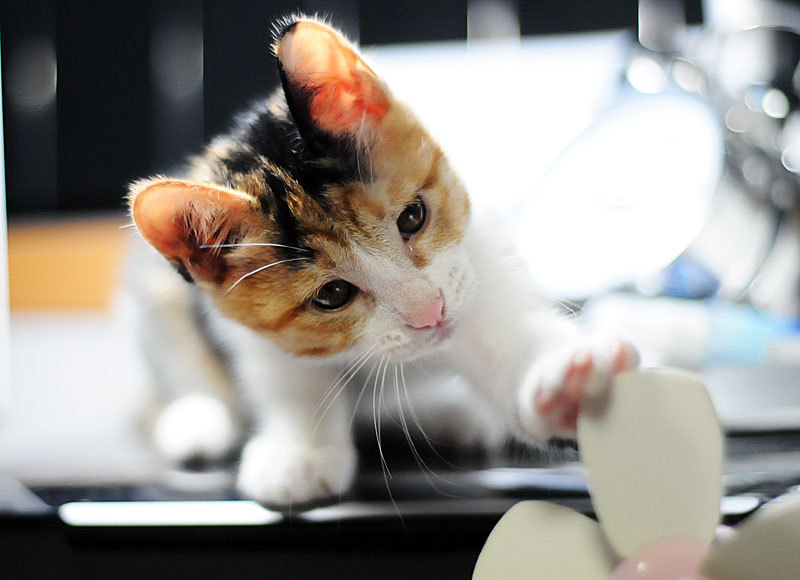
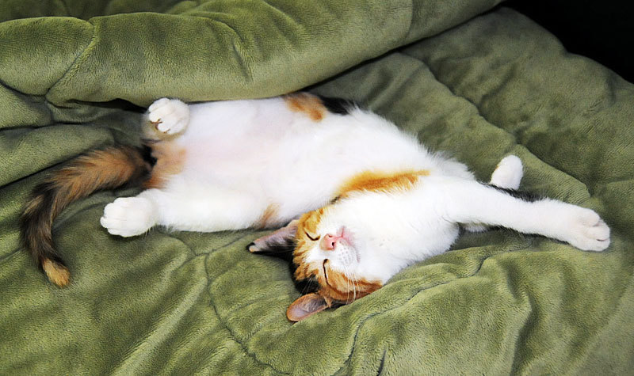
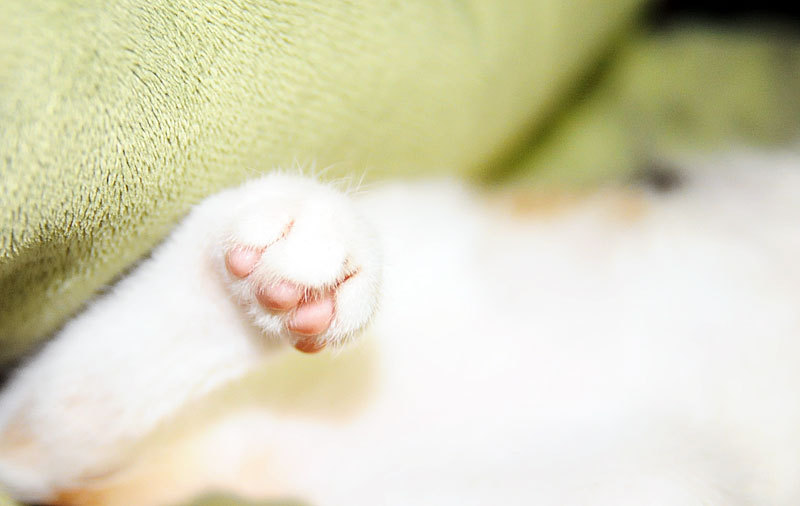
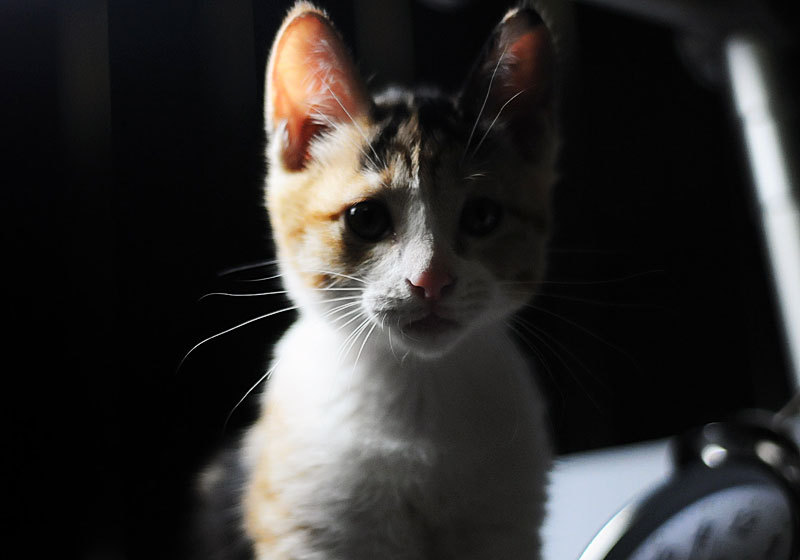

5 Reasons why cats are better

When I was very young, I had both dogs and cats at home. Then, after becoming independent and living alone, I wanted to raise a pet, so I raised a cat because there was a chance to get a cat, and I thought that it was much easier for me to raise a cat than a dog. Of course, it depends on the dog or cat, but based on my experiences so far, the five reasons why I love cats better than dogs are as follows.
1. Cats are cleaner
I think everyone agrees that cats are cleaner than dogs. First of all, even in bowel movements, cats handle everything on the sand, so they smell less, and they clean up well on their own without additional training. If a cat urinates on the floor other than sand, it smells worse, but it rarely happens. On the other hand, dogs need to train for bowel movements separately, and put newspapers on one side of the house or bathroom to let them defecate on top of it. However, newspapers can't absorb urine, so it smells a lot, and sometimes dogs step on their stool.
2. Cats are quiet
Not all dogs do, but most dogs bark quite loudly and frequently. It doesn't matter much during the day, but if a dog barks loudly in the evening when he is away from home, something difficult will happen with his neighbor. On the other hand, cats rarely cry compared to dogs, and the sound is relatively quiet.
3. Cats are dreamers
Cats spend more than half of their days sleeping. It is said that they usually sleep about 18 hours. Most pets raised by people living alone stay home alone during the day after their owners go to work, but cats sleep a lot, so they have a lot of time to sleep alone, making them relatively less lonely. On the other hand, dogs sleep less than cats, so they often bark under stress or separation anxiety when they are alone.
4. Cats do not bother
Dogs rely on people and have a lot of physical affection, but cats don't. Cats are either playing alone or sleeping. I can focus on my work when I have to go on the Internet or handle the rest of the company's work. Instead, it doesn't come well even if I call it, and sometimes the cat scratches my hand with its fingernails. It hurts a lot. However, I prefer a cat that allows me to rest at home after work rather than a dog that comes back from work and sticks to each other without a break.
5. Comfortable when eating.
Cats don't care much whether their owners eat or watch TV. Sometimes, when a cat is bored, it passes by its owner. When I eat, my dog is always under the table or looks at the food on the table. If the dog looks at it pitifully, I can't help but give it to him, and if I give it to him, he will continue to do so. Anyway, I felt sorry for the dog every time I ate, but I don't feel sorry because the cat doesn't care much.